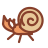
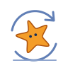
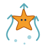
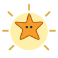
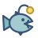
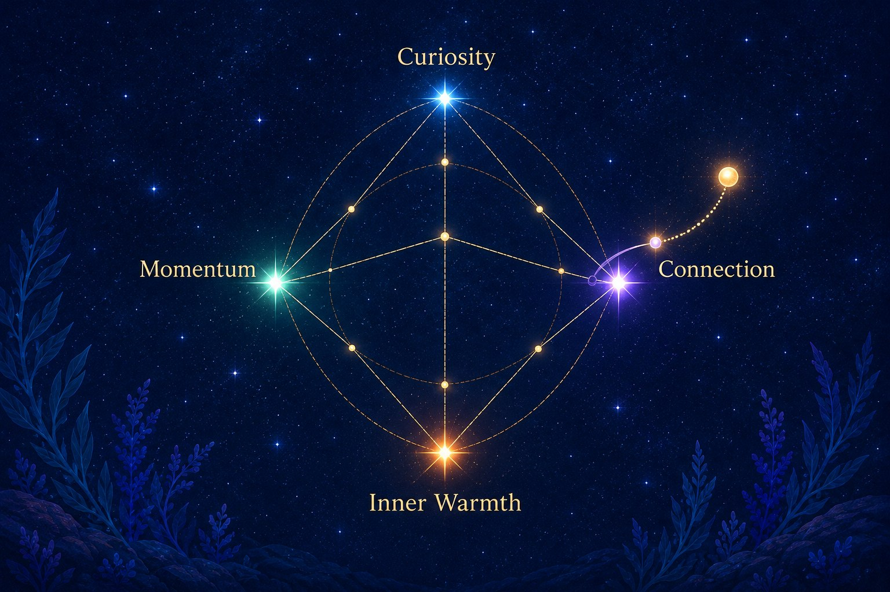
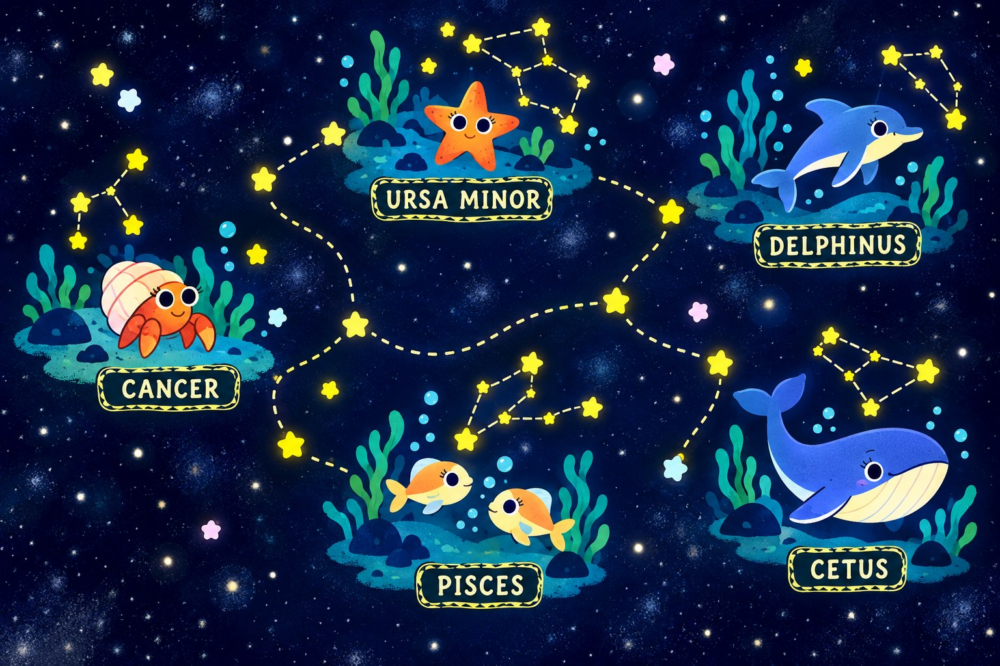

The hermit crab
Someone has moved into the orb you came to collect. Maybe you could help them find another home?
CHI PLAY 2026 / WORK IN PROGRESS
star-scribed is a cozy underwater game about a starfish searching for its lost light. We’re exploring how that journey could invite reflection on depletion, restoration, and balance.
See what’s taking shape ↓01 / MOVEMENT
What would it feel like to cartwheel across the seabed or spin into a rising current? We’re trying out ways for the starfish to get around, including using its glow to approach creatures and find new paths.

Roll across the seabed.

Spin and drift upwards.

Dim down or shine bright.
02 / ENCOUNTERS
New characters could change how we find light and what we choose to do with it.

Someone has moved into the orb you came to collect. Maybe you could help them find another home?
A possible guide to riding currents. Keep up, and you might discover somewhere new.

That tempting glow might belong to someone else. A closer look could lead to a conversation.
Growing brighter might make old friends wary. Could a softer glow help them come closer?
03 / LIGHT & BALANCE
We’re exploring how choosing where to put your light could change the way you move, the places you find, and the creatures you get to know.
Curiosity might help you spot a hidden path. Momentum could carry a spin higher, while Connection might help a shy creature come closer. Inner Warmth could give you a little more room to recover.
Strong currents and a busy reef might wear the starfish out. Finding somewhere quiet to pause could matter just as much as reaching the next orb.
How can these choices feel meaningful while leaving room for each player’s own sense of balance?

04 / THE WIDER WORLD
We’re imagining a bigger constellation map, with reef areas named after animal constellations. A current might lead you to Delphinus, while a little crab makes its home in Cancer.
We’d like the map to hold those little stories as well as help you find your way.

05 / BEFORE & AFTER PLAY
We’re exploring short, optional stories in Narralive Storymaker that could welcome you into the game and give you a chance to reflect on the experience when it ends.
A few illustrated scenes and choices could introduce the starfish’s world and set the scene for your own journey.
You might revisit a place that stayed with you or meet a creature who could use some support. A conversation could offer space to look back on your choices and what they meant to you, with no right answer or need to share anything personal.
There’s plenty left to try. We want to make these ideas playable, hear what players think, and see what changes along the way.
Read the CHI PLAY paper ↗KEEP IN TOUCH
Have a question or an idea you’d like to share? We’d love to hear from you.